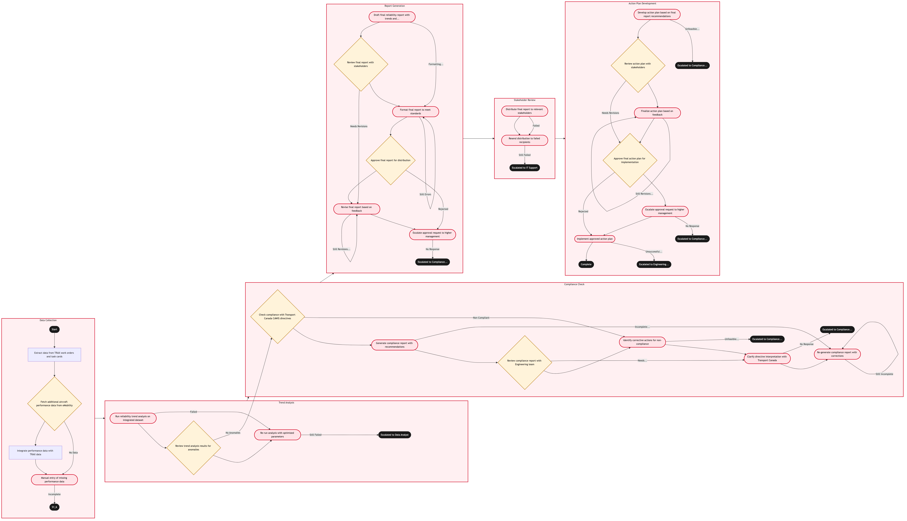

Updated 2026-08-21
Reliability Monitoring and Trend Analysis
Process flow
Click to zoom

Process steps
▼
Phase 1 — Data Collection
4 steps
| Step | Activity | Role | System | Input | Output | KPI | Dec | Exc | Pain point |
|---|---|---|---|---|---|---|---|---|---|
| 1.1 | Extract data from TRAX work orders and task cards | Maintenance Data Analyst | TRAXB | Work orders, task cards | Raw data file | Data extraction time < 2 hours | N | N | Inconsistent data quality across different entries. |
| 1.2 | Fetch additional aircraft performance data from eMobility | Aircraft Performance Specialist | TRAX eMobilityB | Aircraft ID, flight logs | Performance metrics | Data retrieval time < 1 hour | Y | N | Mobile connectivity issues at remote bases. |
| 1.3 | Integrate performance data with TRAX data | Maintenance Data Analyst | TRAXB | Raw data file, Performance metrics | Integrated dataset | Data integration time < 0.5 hours | N | N | Complexity in aligning datasets from different sources. |
| 1.4 | Manual entry of missing performance data | Maintenance Data Analyst | TRAXB | Integrated dataset, Missing data | Updated integrated dataset | Data entry time < 0.5 hours | N | Y | Time-consuming manual data entry process. |
▼
Phase 2 — Trend Analysis
3 steps
| Step | Activity | Role | System | Input | Output | KPI | Dec | Exc | Pain point |
|---|---|---|---|---|---|---|---|---|---|
| 2.1 | Run reliability trend analysis on integrated dataset | Reliability Engineer | TRAXB | Updated integrated dataset | Trend report | Analysis time < 3 hours | N | Y | High computational load during peak usage. |
| 2.2 | Review trend analysis results for anomalies | Reliability Engineer | TRAXB | Trend report | Anomaly list | Review time < 1 hour | Y | N | Identifying false positives in anomaly detection. |
| 2.3 | Re-run analysis with optimized parameters | Reliability Engineer | TRAXB | Integrated dataset, Optimized parameters | Optimized trend report | Analysis time < 2 hours | N | Y | Parameter tuning requires domain expertise. |
▼
Phase 3 — Compliance Check
6 steps
| Step | Activity | Role | System | Input | Output | KPI | Dec | Exc | Pain point |
|---|---|---|---|---|---|---|---|---|---|
| 3.1 | Check compliance with Transport Canada CAWIS directives | Compliance Officer | Transport Canada CAWISC | Trend report, CAWIS directives | Compliance status | Compliance check time < 1 hour | Y | N | Complexity in mapping trends to regulatory requirements. |
| 3.2 | Generate compliance report with recommendations | Compliance Officer | Transport Canada CAWISC | Compliance status, Trend report | Compliance report | Report generation time < 0.5 hours | N | Y | Inaccurate directive interpretation. |
| 3.3 | Review compliance report with Engineering team | Engineering Manager | TRAXB | Compliance report | Reviewed compliance report | Review time < 0.5 hours | Y | N | Lack of cross-functional communication. |
| 3.4 | Identify corrective actions for non-compliance | Compliance Officer | TRAXB | Non-Compliant trends, CAWIS directives | Corrective action plan | Action plan development time < 1 hour | N | Y | Resource allocation constraints. |
| 3.5 | Clarify directive interpretation with Transport Canada | Compliance Officer | Transport Canada CAWISC | Non-Compliant trends, Directive questions | Clarified directives | Clarification time < 1 day | N | Y | Delayed responses from regulatory bodies. |
| 3.6 | Re-generate compliance report with corrections | Compliance Officer | Transport Canada CAWISC | Clarified directives, Trend report | Corrected compliance report | Report generation time < 0.5 hours | N | Y | Data entry errors. |
▼
Phase 4 — Report Generation
6 steps
| Step | Activity | Role | System | Input | Output | KPI | Dec | Exc | Pain point |
|---|---|---|---|---|---|---|---|---|---|
| 4.1 | Draft final reliability report with trends and recommendations | Reliability Engineer | TRAXB | Trend report, Corrective action plan | Final report draft | Report drafting time < 2 hours | N | Y | Formatting issues. |
| 4.2 | Review final report with stakeholders | Engineering Manager | TRAXB | Final report draft | Reviewed report | Stakeholder review time < 1 hour | Y | N | Lack of consensus on recommendations. |
| 4.3 | Format final report to meet standards | Reliability Engineer | TRAXB | Final report draft, Formatting guidelines | Formatted report | Formatting time < 1 hour | N | Y | Dynamic content issues. |
| 4.4 | Approve final report for distribution | Engineering Manager | TRAXB | Reviewed report | Approved report | Approval time < 0.5 hours | Y | N | Delayed approvals due to busy schedules. |
| 4.5 | Revise final report based on feedback | Reliability Engineer | TRAXB | Reviewed report, Feedback | Revised report draft | Revision time < 1 hour | N | Y | Inconsistent feedback from stakeholders. |
| 4.6 | Escalate approval request to higher management | Engineering Manager | TRAXB | Approved report | Escalation notification | Escalation time < 1 day | N | Y | Resource unavailability. |
▼
Phase 5 — Stakeholder Review
2 steps
| Step | Activity | Role | System | Input | Output | KPI | Dec | Exc | Pain point |
|---|---|---|---|---|---|---|---|---|---|
| 5.1 | Distribute final report to relevant stakeholders | Reliability Engineer | TRAXB | Approved report, Stakeholder list | Distribution confirmation | Distribution time < 1 hour | N | Y | Email delivery failures. |
| 5.2 | Resend distribution to failed recipients | Reliability Engineer | TRAXB | Approved report, Failed recipients | Distribution confirmation | Re-distribution time < 0.5 hours | N | Y | Recipient unavailability. |
▼
Phase 6 — Action Plan Development
6 steps
| Step | Activity | Role | System | Input | Output | KPI | Dec | Exc | Pain point |
|---|---|---|---|---|---|---|---|---|---|
| 6.1 | Develop action plan based on final report recommendations | Engineering Manager | TRAXB | Approved report, Recommendations | Action plan draft | Action plan development time < 2 hours | N | Y | Resource allocation constraints. |
| 6.2 | Review action plan with stakeholders | Engineering Manager | TRAXB | Action plan draft | Reviewed action plan | Stakeholder review time < 1 hour | Y | N | Lack of consensus on actions. |
| 6.3 | Finalize action plan based on feedback | Engineering Manager | TRAXB | Reviewed action plan, Feedback | Finalized action plan | Finalization time < 0.5 hours | N | Y | Inconsistent feedback from stakeholders. |
| 6.4 | Approve final action plan for implementation | Engineering Manager | TRAXB | Reviewed action plan | Approved action plan | Approval time < 0.5 hours | Y | N | Delayed approvals due to busy schedules. |
| 6.5 | Escalate approval request to higher management | Engineering Manager | TRAXB | Approved action plan | Escalation notification | Escalation time < 1 day | N | Y | Resource unavailability. |
| 6.6 | Implement approved action plan | Maintenance Team Leader | TRAXB | Approved action plan, Resources | Implementation confirmation | Implementation time < 1 week | N | Y | Resource allocation constraints. |
Swim lanes
Maintenance Data Analyst1.1 1.3 1.4
Aircraft Performance Specialist1.2
Reliability Engineer2.1 2.2 2.3 4.1 4.3 4.5 5.1 5.2
Compliance Officer3.1 3.2 3.4 3.5 3.6
Engineering Manager3.3 4.2 4.4 4.6 6.1 6.2 6.3 6.4 6.5
Maintenance Team Leader6.6
Systems touched
TRAXBTRAX eMobilityBTransport Canada CAWISC
Key performance indicators
- Data extraction time < 2 hours
- Data retrieval time < 1 hour
- Data integration time < 0.5 hours
- Analysis time < 3 hours
- Compliance check time < 1 hour
Risks and control points
- Inconsistent data quality across TRAX entries
- Mobile connectivity issues at remote bases
- Complexity in aligning datasets from different systems
- High computational load during peak usage
- Parameter tuning requires domain expertise
Air Canada Process Wiki — process and systems reference compiled from public sources
for IT Application Management and User Support pre-sales discovery.
Built 2026-08-21. Every system carries an evidence tier: tier C is an industry pattern and tier U is an open
question, and neither should be asserted as fact about Air Canada without confirmation in discovery.
Not affiliated with or endorsed by Air Canada. Air Canada, Aeroplan and Altitude are trademarks of Air Canada.